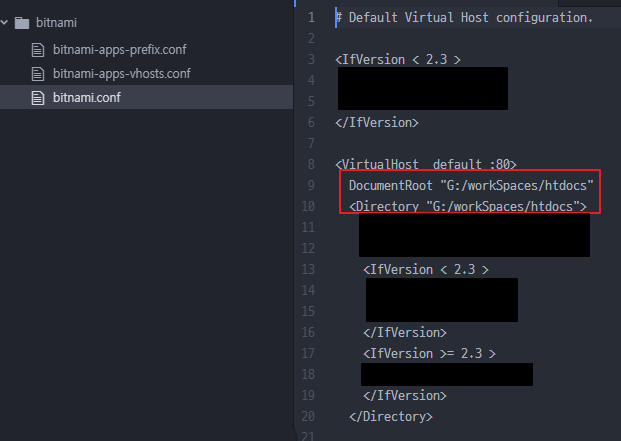

180807_bitnami_rootDirectory변경
Bitnami\wampstack-7.1.20-1\apache2\conf\bitnami.conf
위 경로로 따라 들어가 bitnami.conf를 편집한다.
document root를 변경해준다. (documentRoot & Directory 둘다)

웹 서버로(127.0.0.1:포트)로 접속할 시 지정한 루트를 최상위로 잡는다.